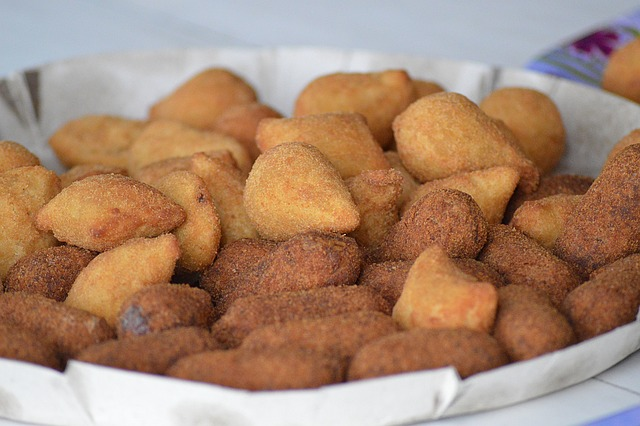

Fake Brazilian Chicken Croquettes
(Coxinhas are originally made of potato dough)

Ingredients for 9 servings
- Filling
-
- 1 tablespoon olive oil
- 4 cloves garlic, minced
- 1 white onion, diced
- 2 cups chicken(250 g), cooked, shredded
- ½ teaspoon paprika, or cayenne pepper
- salt, to taste
- 4 oz cream cheese(110 g)
- 3 tablespoons fresh parsley, chopped
- Dough
-
- 1 tablespoon unsalted butter
- 2 cups whole milk(470 mL)
- ¼ cup chicken broth(60 mL)
- 2 cups all-purpose flour(250 g)
- 1 egg
- 2 cups panko breadcrumbs(100 g)
- oil, for frying
Preparation
- In a medium pot, heat olive oil, then sauté garlic and onions until soft and brown. Add shredded chicken, salt, and paprika (or cayenne pepper). Stir to incorporate.
- Transfer mixture into a bowl, add cream cheese and parsley. Mix well.
- In the same pot, add butter, chicken broth, and milk. Bring to a boil. Stir in flour until dough is formed.
- Transfer dough to a flat surface. Knead the dough while it is warm, but not hot.
- Pinch a piece of dough, about the size of a large egg, and roll into a ball. Using your hands, flatten the dough and spoon filling into the center. Wrap the dough into a pear shape and make sure there aren't any holes.
- While heating a pot of oil to 350˚F/180˚C, dredge the dough in egg and panko, then deep-fry till golden brown and cooked through.
- Drain on a towel, or wire rack and serve immediately.
